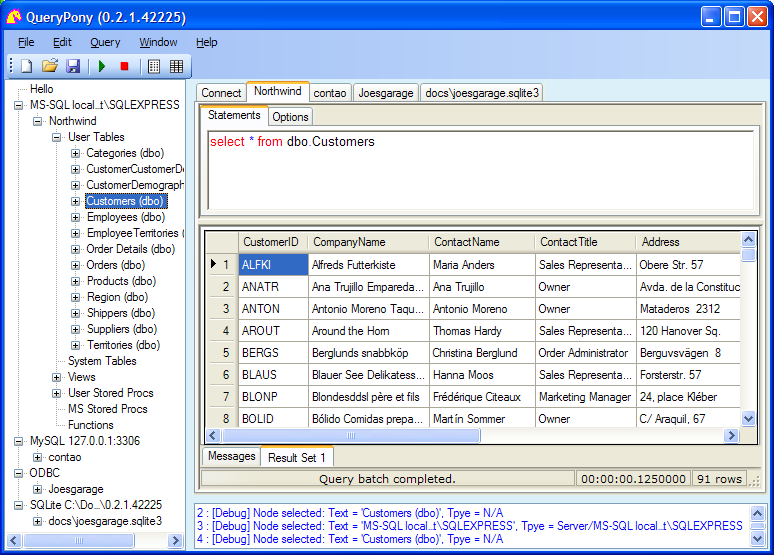

Start Connect Treeview Query Options Settings About
< Draft >
This document is about how to use QueryPony. To read further details, please also see the QueryPony Homepage
| Slogan | : | A Simple Generic Database Query Tool and API. |
| Description | : | Connect to various databases and view the tables (provided you have some basic SQL language knowledge). Supported databases are MS-SQL, MySQL, ODBC, OleDb, Oracle, SQLite (PostgreSQL and CouchDB shall come). |
| Target audience | : | Advanced users, system administrators, programmers. |
| Requirements | : | QueryPony is developed under Windows XP/SP3 32-bit with .NET 3.5. It should also run on the higher Windows flavours, but that is not tested yet. (UAC issues? 64-bit issues?) |
| Status | : | Version 0.3.0 is an Alpha Release, the offered features may be only partially working. |
| Installation | : | No installation. On first start, a configuration folder is created (see menu item About tab Machine). You can delete this folder to reset the settings or to cleanup your machine when discarding the program. |
| History | : | QueryPony is a derivative of Query ExPlus 2.0.3.1, which itself is the continuation of Query Express 3.9. |
|
License
|
: | GNU AGPL v3 (see file license.txt) |
 width="620" height="444"'
/>
A connection was made, and a query issued.
The remaining chapters of this manual are:
In the Connect Form, you provide the connection settings and then connect to a database on a database server.
The Object Treeview displays your connections in a hierarchical view with the server nodes on top, inside them the databases, inside them the tables, inside them the fields.
The Query Form lets you write SQL query statements and issue them to the database, and it shows the results of the queries.
(This feature is not yet available.) The Query Options allow to predefine certain query behaviours.
The Program Settings define some program behaviour.
The About Form displays the background information about QueryPony.
{kind=link}